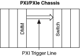
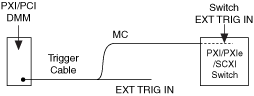

提交有关此主题的反馈。
提交有关此主题的反馈。 访问ni.com/support以获得技术支持。
访问ni.com/support以获得技术支持。有关可能的触发输入位置，请参阅设备中开关模块的触发主题。
所有 PXI/PXI Express 开关都可以接收来自 PXI/PXI Express 机箱的 PXI 触发线的输入触发。在此设置中，在 DMM 和 PXI/PXI Express 开关之间不使用电缆进行触发。DMM 通过 PXI 触发线将其 MC 信号发送到 PXI/PXI Express 开关。

有关可能的触发输入位置，请参阅设备中的开关模块。
一些 PXI/PXI Express 开关可以接收来自前面板或接线端子的输入触发。此设置使用 AUX 触发电缆来触发开关。

有关可能的触发输入位置，请参阅设备中的开关模块。
提交有关此主题的反馈。 访问ni.com/support以获得技术支持。